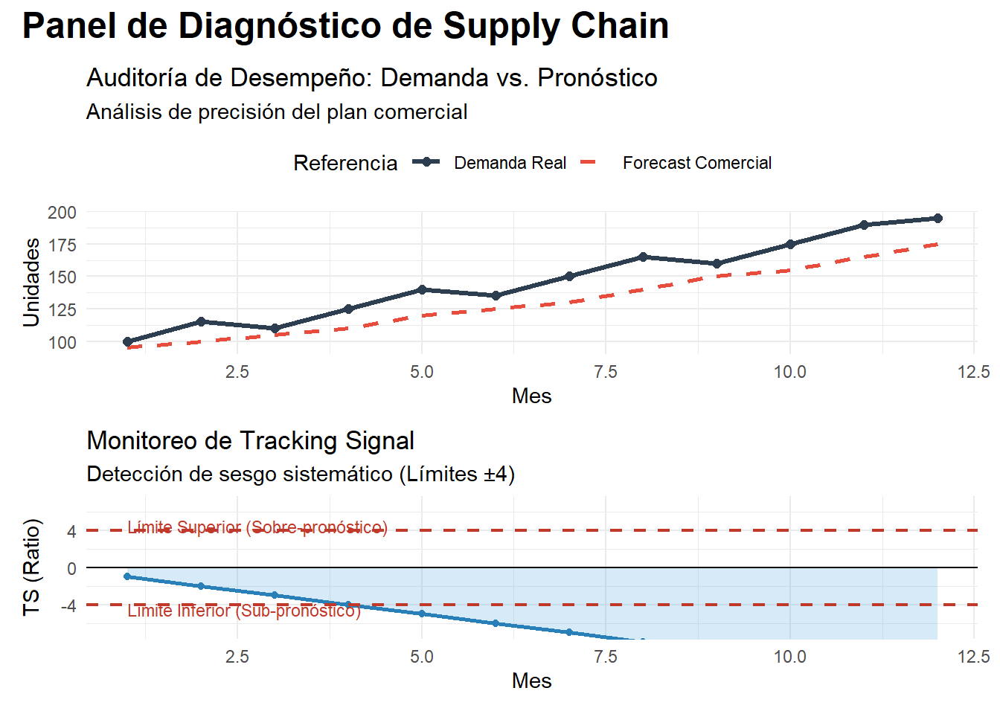

4. ¿Qué tan mal estamos? Estableciendo el Baseline y Métricas de Error
¡Bienvenido al momento de la verdad! Si llegaste hasta aquí, ya has construido los cimientos: tienes un mapa de tu red (Cap. 1), una demanda reconstruida que refleja la intención real de compra (Cap. 2) y tus productos clasificados por su importancia estratégica y su dificultad técnica (Cap. 3).
Ahora toca enfrentar la realidad. La pregunta que todo director financiero o de operaciones te hará no es si el modelo es “bonito” o si usaste una Red Neuronal, sino: “¿Y qué tanto estamos fallando hoy?”.
En Supply Chain, la honestidad brutal es tu mejor aliada. “Estamos más o menos” no es una métrica; es una opinión subjetiva que bloquea la mejora continua. Medir el error es, a menudo, un ejercicio de humildad corporativa que muchas empresas evitan para no evidenciar ineficiencias. Sin embargo, en este capítulo estableceremos el Baseline (tu punto cero de comparación) y aprenderemos a diseccionar el error en sus componentes de magnitud y dirección. Te voy avisando: si no eres capaz de medir el dolor financiero que causa tu error hoy, nunca podrás cuantificar el ahorro que traerán tus modelos avanzados mañana. Este es el “kilómetro cero” de tu transformación digital hacia una cadena inteligente.
4.1 El Concepto de Baseline: El Modelo “Naive”
Antes de intentar predecir el futuro con modelos complejos, necesitamos un punto de referencia mínimo que represente el “esfuerzo cero”. En ciencia de datos aplicada, esto se llama el Modelo Base o Naive. Es el “rival a vencer” y la medida de tu propia ineficacia: si tu proceso actual no le gana a un modelo Naive, estás desperdiciando recursos humanos y tecnológicos.
La lógica del Pronóstico Ingenuo (Naive Forecast) es la persistencia absoluta: “El mercado se comportará mañana exactamente igual que hoy”.
\[
\large \hat{y}_{t+1} = y_t
\]
Desglose de la fórmula y origen de datos:
\(\large \hat{y}_{t+1}\) (Pronóstico): Es la cantidad que estimamos que se demandará en el próximo periodo. Representa tu “apuesta” de inventario para el futuro inmediato.
\(\large y_t\) (Demanda Real): Es el valor de la Demanda Reconstruida (Unconstrained Demand) del Capítulo 2.
Origen de los datos: Este valor debe venir de tu tabla de transacciones históricas filtradas. Crucial: Debe ser la demanda después de corregir quiebres de stock. Si usas la venta facturada (que es una venta restringida por tu propia falta de stock), tu baseline será artificialmente bajo y tus métricas de error parecerán mejores de lo que realmente son, ocultando el costo de oportunidad.
4.1.1 El S-Naive: Para negocios con memoria estacional
Si tu negocio vende helados o calefactores, el Naive simple fallará. En ese caso, usamos el Seasonal Naive (S-Naive): “Diciembre de este año será igual a diciembre del año pasado”.
\[
\large \hat{y}_{t+1} = y_{t+1-periodo}
\]
TipLa Prueba de Fuego del Analista (FVA)
El modelo Naive es tu “competidor silencioso”. En la Parte VI del libro utilizaremos este concepto para calcular el Forecast Value Added (FVA). Si un equipo de 10 personas y un software de 100k USD no logran ser al menos un 10% mejores que un simple Naive, el proceso está “destruyendo valor”. Es preferible automatizar el Naive y dedicar a la gente a otra tarea.
4.2 Anatomía del Error: Magnitud y Dirección
Un error de 100 unidades no impacta igual en el balance contable si sobraron (exceso) que si faltaron (quiebre). Para un profesional de Supply Chain, el error es un vector con dos dimensiones críticas: la magnitud (¿qué tan fuerte fue el golpe?) y la dirección (¿hacia qué lado nos caímos?).
4.2.1 Magnitud: MAE vs. RMSE (¿Lineal o Exponencial?)
Estas métricas miden la distancia absoluta entre el plan y la realidad. No les importa el signo, sino el impacto físico del desvío.
A. MAE (Mean Absolute Error): La métrica de la bodega
Es el promedio simple de los errores.
Interpretación: Es la “distancia promedio” en unidades.
Sentido de negocio: Si el MAE es 50, significa que, en promedio, cada mes te equivocas por 50 cajas. Es ideal para dimensionar capacidad de almacenamiento o mano de obra. \[
\large MAE = \frac{1}{n} \sum_{i=1}^{n} |Actual_i - Forecast_i|
\]
B. RMSE (Root Mean Square Error): El detector de crisis
Eleva los errores al cuadrado antes de promediar, lo que penaliza severamente los desvíos grandes.
Interpretación: Es una medida de variabilidad del error.
Sentido de negocio: Un RMSE alto comparado con el MAE indica que tienes “bombazos” (outliers) que están destruyendo tu operación esporádicamente. \[
\large RMSE = \sqrt{\frac{1}{n} \sum_{i=1}^{n} (Actual_i - Forecast_i)^2}
\]
Variables: * \(Actual_i\): Demanda real corregida del periodo \(i\) (Cap. 2). * \(Forecast_i\): Tu apuesta para ese periodo (Naive o plan oficial). * \(\large n\): Número de periodos evaluados (ventana de error).
Ejemplo: El efecto de los errores grandes
Imagina dos productos con el mismo error total acumulado en 3 meses, pero diferente distribución:
Mes
Producto A (Error Estable)
Producto B (Con Outlier)
1
10
2
2
10
2
3
10
26
Total Error Abs.
30
30
MAE
10
10
RMSE
10
15.1
Lección: El MAE dice que ambos son igual de “malos”. El RMSE del Producto B es un 50% más alto, alertándote de que el mes 3 fue una catástrofe logística (posible quiebre de stock o flete aéreo de emergencia).
4.2.2 Dirección: El BIAS (Sesgo o la inclinación al error)
El sesgo es el “error sistémico”. Nos dice si el proceso de planificación está contaminado por optimismo o pesimismo.
BIAS Positivo (+): Estás pronosticando sistemáticamente por encima de la demanda. Resultado: Inventario muerto y capital atrapado.
BIAS Negativo (-): Estás pronosticando por debajo. Resultado: Ventas perdidas, clientes enojados y urgencias en producción.
4.2.3 Matriz de Decisión: ¿Qué métrica usar y cuándo?
Para pulir tu reporte, usa esta guía de fortalezas y debilidades:
Métrica
Cuándo es FUERTE
Cuándo es FLOJA
Recomendación
MAE
Cuando el costo del error es lineal (1 caja extra cuesta siempre lo mismo).
Cuando necesitas detectar fallos críticos o muy grandes.
Úsala para reportar a Operaciones (volumen).
RMSE
Cuando un error grande es catastrófico (ej. productos perecederos o piezas críticas).
Es difícil de explicar a alguien no técnico (¿qué es una “unidad al cuadrado”?).
Úsala para Optimizar Modelos matemáticos.
BIAS
Para detectar “vicios” en el equipo comercial o ajustes manuales excesivos.
Puede ser engañoso: un BIAS de 0 puede esconder errores gigantes que se cancelan.
Úsala para el S&OP y corregir el comportamiento.
TipRegla de Oro
Nunca midas solo la magnitud. Un MAE bajo con un BIAS muy alto significa que estás “fallando poco” pero siempre hacia el mismo lado, lo cual es mucho más fácil de corregir que un error aleatorio. El BIAS es la métrica de la calidad del proceso.
4.3 La Batalla de las Métricas: MAE + BIAS vs. MAPE
En los pasillos corporativos, el MAPE (Mean Absolute Percentage Error) es el rey. Es seductor porque es intuitivo: “Tenemos un error del 10%” suena mucho más claro que “Fallamos por 452 unidades”. Sin embargo, en el mundo de la alta ingeniería de Supply Chain, el MAPE es considerado un “espejismo peligroso”.
4.3.1 La Maldición del Porcentaje: ¿Por qué el MAPE es tramposo?
El MAPE divide el error entre la demanda real para obtener un porcentaje. Esta operación matemática tan simple esconde tres trampas que pueden arruinar tu estrategia de inventarios:
El Sesgo de Subestimación (Asimetría): El MAPE castiga más el exceso de stock que el quiebre. Si pides de más, el error puede ser del 1000%. Si pides de menos, el error nunca superará el 100%. Un algoritmo que intente minimizar el MAPE aprenderá que es “mejor” dejarte sin producto que arriesgarse a que sobre.
La Explosión del Cero: Si un producto no tiene ventas en un mes (\(y_t=0\)), la fórmula intenta dividir por cero y el sistema colapsa. Esto lo hace inútil para productos de baja rotación (Lumpy/Intermittent).
Indiferencia de Escala: El MAPE trata igual un error del 20% en un tornillo de 1 dólar que un 20% en un motor de 10,000 dólares. No tiene visión financiera.
4.3.2 El Experimento del Espejismo: Cómo el MAPE destruye tus ventas
Imagina que eres el responsable de inventarios y tienes que elegir entre dos escenarios de pronóstico para un producto cuya demanda real fue de 100 unidades. El impacto en unidades es el mismo (fallaste por 90), pero mira lo que dice el MAPE:
Escenario
Demanda Real (\(\large y_t\))
Pronóstico (\(\large \hat{y}_t\))
Error Absoluto (\(MAE\))
MAPE (%)
Consecuencia Operativa
A: Optimista
100
190
90
90%
Te sobra stock.(Costo de almacenamiento)
B: Pesimista
100
10
90
90%
Quiebre de stock.(Venta perdida y cliente enojado).
Aquí viene la trampa: Si la demanda real hubiera sido de solo 10 unidades en el Escenario A, el MAPE saltaría a 900%.
Conclusión: Para el MAPE, el Escenario B (quedarse sin nada) siempre se verá “menos peor” que el Escenario A. Si optimizas tu empresa basándote solo en MAPE, estarás diseñando una máquina de quiebres de stock.
4.3.3 Cuadro Comparativo: ¿En qué bando estás?
Característica
MAPE (%)
MAE + BIAS (Unidades)
Fortaleza Principal
Excelente para comunicar a perfiles no técnicos.
Refleja la realidad física de la bodega.
Punto Débil
Induce al desabasto sistemático.
Difícil de comparar entre productos de distinta escala.
Manejo de Ceros
Inservible (Div/0).
Robusto y confiable.
Uso Ideal
Reportes ejecutivos de muy alto nivel.
Operación diaria, compras y planificación.
4.3.4 El “Traductor Corporativo”: ¿A quién le cuento qué?
No todas las métricas son para todos los oídos. Para ser un líder efectivo, debes adaptar el mensaje:
Para el CEO / Gerente General: Usa el WAPE (ver sección 4.4). Es un porcentaje, pero sin las trampas del MAPE. Les da la sensación de escala que buscan.
Para el CFO / Finanzas: Traduce el MAE a Dinero. “Nuestro error equivale a $50,000 USD de capital en riesgo mensualmente”. Esto consigue presupuestos para mejores herramientas.
Para el Jefe de Almacén / Operaciones: Háblales en MAE de Unidades. “Prepárate para mover 1,200 unidades extra de margen de error”.
Para el Director de S&OP: Usa el BIAS. Es la única métrica que les dirá si el equipo comercial está inflando las proyecciones para “asegurar bono” o si producción está siendo demasiado conservadora.
TipRecomendación Master
Si te obligan a usar MAPE, acompáñalo siempre del BIAS. Si el MAPE es del 15% pero el BIAS es de -12%, ya sabes que ese 15% de error se está convirtiendo casi totalmente en ventas perdidas.
4.4 El WAPE (Weighted MAPE): El Estándar de Oro para Gerencia
Si el MAE es para la bodega y el MAPE es un espejismo, el WAPE (Weighted Mean Absolute Percentage Error) es la métrica que pone a todos de acuerdo. Es el “Traductor Universal” de la Supply Chain.
El WAPE resuelve el mayor pecado del MAPE: tratar a todos los productos por igual. En lugar de promediar porcentajes individuales, el WAPE suma todos los errores y los divide entre la demanda total del portafolio.
Ponderación Automática: Le da más peso a lo que más vende. Un error de 1,000 unidades en un producto Clase A impactará el WAPE mucho más que ese mismo error en un producto Clase C.
Inmunidad al Cero: Como la suma de la demanda total de la empresa casi nunca es cero, la fórmula es estable y no explota.
Visión de Portafolio: Permite decir “Nuestra operación tiene un 15% de error” con total rigor matemático, ya que ese 15% representa el volumen real que se desvió del plan.
4.4.2 Ejemplo: El WAPE en acción (Portafolio A vs. B)
Imagina una empresa que vende dos productos. Uno es una estrella de ventas y el otro es un accesorio marginal.
Producto
Demanda Real
Pronóstico
Error Abs.
MAPE (Indiv.)
A (Best Seller)
1,000
900
100
10%
B (Accesorio)
10
1
9
90%
Totales
1,010
901
109
Promedio: 50%
El diagnóstico del MAPE (50%): ¡Alarma roja! El gerente pensará que la mitad de la empresa está mal planificada.
El diagnóstico del WAPE:\(\large\frac{109}{1,010} = \mathbf{10.8\%}\).
La realidad profesional: La operación está bastante sana (10.8% de error real sobre el volumen total). El MAPE nos estaba mintiendo al darle la misma importancia al accesorio que al best seller. El WAPE pone las cosas en su lugar.
4.4.3 Fortalezas y Debilidades del WAPE
Característica
WAPE (Weighted MAPE)
Cuándo es FUERTE
Para reportar desempeño mensual a la Dirección General. Para comparar la precisión entre diferentes regiones o categorías de productos.
Cuándo es FLOJO
Si el portafolio tiene precios muy disparatados (un error en una joya de oro pesa igual que un error en un clavo si solo miras unidades).
Recomendación
Si tus productos tienen precios muy distintos, usa el WAPE en Valor Dinero
4.4.4 Resumen de Selección: ¿Qué métrica elijo?
Para cerrar tu reporte de métricas, sigue esta jerarquía:
¿Quieres optimizar el modelo matemático? Usa RMSE.
¿Quieres planificar la capacidad de la bodega? Usa MAE.
¿Quieres saber si tu equipo está siendo muy optimista? Usa BIAS.
¿Quieres presentar resultados a la Junta Directiva? Usa WAPE.
¿Quieres vivir en un espejismo peligroso? Usa solo el MAPE (y prepárate para los quiebres de stock inesperados).
ImportantEl WAPE no es el fin del camino
Aunque el WAPE es excelente para reportar, recuerda que “oculta” los errores individuales. Un WAPE del 10% puede esconder un producto crítico que está quebrado al 100%. Por eso, el analista senior mira el WAPE para el bosque y el MAE/BIAS para los árboles.
4.5 Forecastability: El Límite de lo Posible
En Supply Chain, hay una verdad incómoda: No todo se puede predecir. Exigir un WAPE del 5% a un producto con demanda errática es como intentar predecir el resultado de un dado; no es un problema de falta de inteligencia, sino de la naturaleza del fenómeno. La Forecastability(Pronosticalidad) es la medida de qué tan “predecible” es un producto basándose en su estabilidad histórica.
4.5.1 El Coeficiente de Variación (CV): Tu detector de ruido
Para medir la predecibilidad, usamos el Coeficiente de Variación (CV). Es una métrica simple que compara la desviación estándar con el promedio.
CV Bajo (< 0.5): Demanda “suave” (Smooth). Es el sueño de cualquier planificador. Los errores aquí suelen ser responsabilidad del modelo o del proceso humano.
CV Alto (> 1.0): Demanda “caótica” o “errática” (Lumpy). Aquí, el error es inherente al azar. No importa qué tan avanzado sea tu algoritmo, siempre habrá un margen de error alto.
4.5.2 La Matriz de Predecibilidad
No midas a todos con la misma vara. Clasifica tus productos en este cuadrante para gestionar las expectativas de la gerencia:
Tipo de Demanda
Comportamiento
Estrategia de Pronóstico
Estable (Smooth)
Ventas constantes, bajas fluctuaciones.
Modelos estadísticos clásicos (Suavizamiento, ARIMA). El objetivo es Precisión Máxima.
Intermitente
Muchos meses con venta cero y picos repentinos.
Modelos de Croston o SBA. El objetivo es Nivel de Servicio, no precisión.
Errática (Lumpy)
Volumen alto pero con cambios violentos.
Inteligencia de Mercado y Colaboración (S&OP). El algoritmo solo dará una base.
4.5.3 ¿Por qué importa esto? El impacto en el Stock de Seguridad
La predecibilidad dicta tu costo financiero. Existe una relación directa entre el CV y el Stock de Seguridad:
A mayor CV (más ruido), necesitas más inventario de protección para evitar el quiebre.
Si intentas “forzar” un pronóstico preciso en un producto de CV alto, solo lograrás que el sistema de compras reaccione de forma histérica (efecto látigo), pidiendo demasiado hoy y nada mañana.
4.5.4 El Escudo del Planificador (Concepto de “Forecast Goal”)
Un error común en las empresas es poner una meta única de precisión (ej. “Queremos un 80% de Accuracy global”). Esto es un error estratégico. Un líder de Supply Chain maduro establece metas diferenciadas:
Productos Clase A / Estables: Meta 85% Accuracy.
Productos Clase B / Erráticos: Meta 60% Accuracy.
Nuevos lanzamientos: Meta 40% Accuracy.
Tip
Antes de aceptar un KPI de error, calcula el CV de tu portafolio. Si el 70% de tus SKU tienen un CV > 1.0, un error (WAPE) del 30% no es un mal desempeño; es, probablemente, el límite de lo que la estadística puede alcanzar. Usa el CV para defender la integridad de tu trabajo.
4.6 Tracking Signal: La Alarma de Incendio del Pronosticador
Hasta ahora hemos medido fotos fijas: el error de este mes o el promedio del trimestre. Pero el error es dinámico. El Tracking Signal (TS) es una métrica de control de calidad que nos avisa, en tiempo real, si nuestro modelo de pronóstico ha dejado de ser válido porque la demanda cambió de patrón (cambio estructural).
Es, en esencia, un termómetro que detecta si el BIAS (sesgo) se está acumulando de forma peligrosa hacia un lado.
4.6.1 ¿Cómo se calcula?
El Tracking Signal compara la suma acumulada de los errores con la magnitud promedio del error (MAD o MAE).
Donde el MAD (Mean Absolute Deviation) es simplemente el MAE calculado de forma rodante.
4.6.2 Interpretación: Los Límites de Control
Imagina que estás conduciendo un auto. El Tracking Signal es el indicador que te dice si te estás saliendo del carril:
TS = 0: El modelo es perfecto. Los errores positivos se cancelan exactamente con los negativos.
Límites Ideales (\(\pm4\)): En la industria, se considera que si el TS se mantiene entre -4 y 4, el error es puramente aleatorio (ruido blanco). Estás dentro del carril.
TS > 4: Estás subestimando la demanda de forma sistemática. Te vas a quedar sin stock pronto. El modelo “se quedó corto”.
TS < -4: Estás sobreestimando. Estás llenando la bodega de inventario que no se mueve. El modelo “se pasó de largo”.
4.6.3 El Tablero de Control: Visualizando el Desvío
No esperes a fin de mes para revisar el WAPE. Un analista Pro tiene un gráfico de control donde el TS se ve así:
Mes
Error Real
Suma Error Acum.
MAD (MAE)
Tracking Signal
Estado
1
+10
10
10
1.0
OK
2
+15
25
12.5
2.0
OK
3
+20
45
15
3.0
Alerta Amarilla
4
+25
70
17.5
4.0
¡ALARMA!
Diagnóstico: Aunque el error individual no parece gigante, el hecho de que sea siempre positivo hace que el TS trepe rápidamente. En el mes 4, el sistema te grita: “¡Deja de usar este modelo, algo cambió en el mercado!”.
4.6.4 ¿Qué hacer cuando suena la alarma?
Cuando un producto “dispara” el Tracking Signal, no sirve de nada ajustar el número a mano. Debes investigar la causa raíz:
Cambio de Tendencia: ¿Entró un competidor nuevo? ¿Hubo una campaña de marketing no comunicada?
Obsolescencia del Modelo: ¿Estamos usando un promedio móvil para un producto que ahora tiene estacionalidad?
Promociones: ¿Hubo un “push” de ventas que rompió la historia?
WarningError del Principiante
Muchos analistas ven un error grande y corren a cambiar el pronóstico. El analista Senior mira el Tracking Signal. Si el error es grande pero el TS está cerca de cero, es un evento fortuito (ruido). No toques nada. Si el error es pequeño pero el TS es 4.5, tienes un problema sistémico. Actúa de inmediato.
4.7 El Laboratorio de Diagnóstico: Implementación en R
De nada sirve la teoría si no puedes ejecutarla sobre tus datos. En esta sección, construiremos un script profesional que automatiza el cálculo de todas las métricas vistas y genera un tablero de control para detectar anomalías.
4.7.1 El Script de Auditoría de Pronósticos
Este script utiliza el ecosistema tidyverse para procesar los datos y calcular el FVA (Forecast Value Added), que nos dirá si nuestro proceso humano está mejorando o empeorando el pronóstico básico (Naive).
# Cargamos las librerías silenciando los mensajes de iniciosuppressPackageStartupMessages({library(tidyverse)library(scales)library(patchwork)})# 1. Creación del Modelo de Simulación (datos_auditoria)# Simulamos 12 meses con una tendencia alcista donde el forecast se queda atrásset.seed(42)datos_auditoria <-tibble(mes =1:12,demanda_real =c(100, 115, 110, 125, 140, 135, 150, 165, 160, 175, 190, 195),forecast_comercial =c(95, 100, 105, 110, 120, 125, 130, 140, 150, 155, 165, 175)) %>%mutate(error_abs_comercial =abs(demanda_real - forecast_comercial),bias_comercial = forecast_comercial - demanda_real,bias_acumulado =cumsum(bias_comercial),mad_rodante =cummean(error_abs_comercial),tracking_signal = bias_acumulado / mad_rodante )# 2. Gráfico 1: Comparativa Demanda vs. Pronósticop1 <-ggplot(datos_auditoria, aes(x = mes)) +geom_line(aes(y = demanda_real, color ="Demanda Real"), linewidth =1.2) +geom_line(aes(y = forecast_comercial, color ="Forecast Comercial"), linetype ="dashed", linewidth =1) +geom_point(aes(y = demanda_real, color ="Demanda Real"), size =2) +labs(title ="Auditoría de Desempeño: Demanda vs. Pronóstico",subtitle ="Análisis de precisión del plan comercial",y ="Unidades",x ="Mes",color ="Referencia" ) +scale_color_manual(values =c("Demanda Real"="#2c3e50", "Forecast Comercial"="#e74c3c")) +theme_minimal() +theme(legend.position ="top")# 3. Gráfico 2: Tracking Signal (Límites de Control)p2 <-ggplot(datos_auditoria, aes(x = mes, y = tracking_signal)) +geom_area(fill ="#3498db", alpha =0.2) +geom_line(color ="#2980b9", linewidth =1) +geom_point(color ="#2980b9") +geom_hline(yintercept =c(-4, 4), linetype ="dashed", color ="#c0392b", linewidth =0.8) +geom_hline(yintercept =0, color ="black", linewidth =0.5) +annotate("text", x =1, y =4.5, label ="Límite Superior (Sobre-pronóstico)", color ="#c0392b", hjust =0, size =3) +annotate("text", x =1, y =-4.5, label ="Límite Inferior (Sub-pronóstico)", color ="#c0392b", hjust =0, size =3) +labs(title ="Monitoreo de Tracking Signal",subtitle ="Detección de sesgo sistemático (Límites ±4)",y ="TS (Ratio)",x ="Mes" ) +# Usamos coord_cartesian para hacer zoom sin eliminar datos fuera de rangocoord_cartesian(ylim =c(-7, 7)) +theme_minimal()# 4. Combinación de Gráficos (Patchwork)p1 / p2 +plot_annotation(title ="Panel de Diagnóstico de Supply Chain",theme =theme(plot.title =element_text(size =18, face ="bold")))

La interpretación de este panel se divide en dos niveles: el desempeño inmediato (arriba) y la salud del proceso (abajo).
Aquí tienes la guía para leer lo que el script acaba de generar:
1. Gráfico Superior: Auditoría de Desempeño (El “Qué”)
Este gráfico muestra la “foto” mes a mes.
La Brecha (Gap): Observa que la línea roja (Forecast) está casi siempre por debajo de la azul (Demanda). Esto te dice de inmediato que el equipo comercial está siendo conservador o pesimista.
La Reacción: Nota cómo la línea roja intenta “perseguir” a la azul pero siempre llega tarde. Esto se conoce como un pronóstico rezagado, típico de cuando solo se mira el pasado reciente sin entender la tendencia alcista.
2. Gráfico Inferior: Tracking Signal (El “Por qué”)
Este es el gráfico más importante para un analista senior, porque mide el sesgo sistemático.
La Dirección (Pendiente): La línea azul cae de forma constante. En la fórmula del Tracking Signal, cuando el resultado es negativo, significa que la demanda real está superando al pronóstico.
Los Límites Críticos (\(\pm 4\)):
Zona Blanca (entre -4 y 4): El error se considera “ruido” aceptable o aleatorio. El modelo está “dentro del carril”.
Zona Roja (fuera de\(\pm 4\)): En tu gráfica, la línea cruza el -4 alrededor del mes 6 o 7. Aquí es donde suena la alarma. El modelo ya no es confiable; no es un error de un solo mes, es un error de diseño. El proceso está “roto”.
3. Diagnóstico Final del Modelo Simulado
Si este fuera tu negocio real, la conclusión sería:
“Tenemos un sesgo de sub-pronóstico sistemático. El equipo comercial está ignorando el crecimiento del mercado. Esto no se arregla ‘ajustando un poquito’ el próximo mes; necesitamos cambiar el algoritmo por uno que capture mejor la tendencia, porque el Tracking Signal nos indica que estamos fuera de control estadístico desde hace 5 meses.”
Resumen para Gerencia:
Si la línea del Tracking Signal…
Significa que…
Riesgo para el negocio
Sube y cruza el +4
Pronosticamos de más (Optimismo).
Exceso de inventario y capital atrapado.
Baja y cruza el -4
Pronosticamos de menos (Pesimismo).
Quiebres de stock y ventas perdidas.
Zigzaguea cerca de 0
El error es aleatorio.
Proceso sano y bajo control.
4.8 Conclusión: Del Espejo Retrovisor al Parabrisas
Hemos llegado al final de la Parte I: Los Cimientos. Si has seguido este recorrido, has pasado de la intuición al rigor técnico. Muchas empresas intentan saltar directamente a la Inteligencia Artificial sin haber pasado por estos cuatro pasos, y ese es el motivo por el cual el 80% de los proyectos de analítica en Supply Chain fracasan.
4.8.1 El Recuento de los Daños (y de las Ganancias)
Hagamos un inventario de lo que ahora tienes en tu arsenal:
Datos Auditados (Cap. 1): Ya no confías ciegamente en el ERP. Sabes dónde están las trampas de los datos.
Demanda Real (Cap. 2): Dejaste de planificar sobre “ventas” y empezaste a planificar sobre “necesidades del mercado”, limpiando el ruido de las promociones y los quiebres.
Segmentación Estratégica (Cap. 3): Sabes que no todos los SKU nacieron iguales. Tienes un mapa ABC-XYZ que dicta dónde poner tu tiempo y tu dinero.
Métricas de Verdad (Cap. 4): Tienes un Baseline (Naive) y un sistema de alarmas (Tracking Signal). Ya nadie puede engañarte con un “vamos bien” basado en un MAPE mentiroso.
4.8.2 La Transición: De lo Descriptivo a lo Predictivo
Hasta este momento, hemos estado mirando el espejo retrovisor. Hemos analizado el pasado para entender nuestra posición actual. Pero la Supply Chain no se conduce mirando hacia atrás.
A partir del próximo capítulo, entramos en la Parte II: El Laboratorio de Pronósticos. Aquí es donde el bisturí se convierte en motor. Dejaremos de preguntar “¿Qué pasó?” para empezar a resolver la pregunta del millón: “¿Qué va a pasar mañana?”.
4.8.3 Hoja de Ruta: Lo que viene en la Parte II
En los siguientes capítulos, convertiremos todo este diagnóstico en planes de acción:
Modelos Estadísticos: Desde el suavizamiento exponencial hasta ARIMA.
Machine Learning: Cómo usar variables externas (clima, precios, festivos) para anticiparnos al mercado.
S&OP Proactivo: Cómo usar tus nuevas métricas para liderar la reunión de ventas y operaciones con datos, no con opiniones.
NoteTu Próximo Paso
Antes de pasar al Capítulo 5, asegúrate de tener calculado el WAPE y el BIAS de los últimos 6 meses de tu portafolio actual. Ese será el “muro” contra el que lanzaremos nuestros nuevos modelos para ver si realmente somos capaces de mejorar la realidad.
Si no puedes medir la mejora, la mejora no existe.
Hemos terminado la fase de preparación. La infraestructura está lista. Es hora de empezar a predecir.